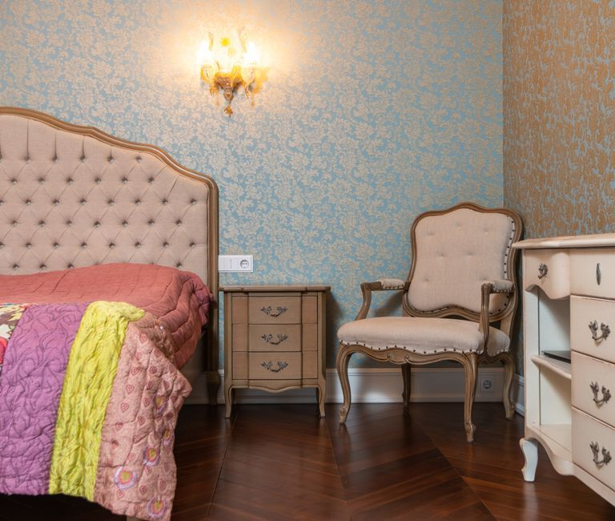

An old bedroom set comes out in one visit. Our crew takes the bed frame down to its rails, lifts the headboard off, pulls the mirror off the dresser, and carries every piece out, including the nightstands, the chest and the mattress if it is going too. Your part is emptying the drawers and telling us what floor the room is on.
Bedroom furniture tends to arrive as a set and stay as a set. The bed, the headboard, the dresser with its mirror, a tall chest and two nightstands came home together, and they sat in the same room for fifteen or twenty years. Then a new set is ordered, a house is sold, or a parent's room is being cleared, and all of it has to leave at the same time. It is one of the most common jobs we do, and it is mostly a carrying job.
What comes out of a bedroom, and what we take
All of it. The pieces we carry out most often are:
- Bed frames of every kind: metal rail frames, wooden sleigh beds, four-poster beds, platform beds and storage beds with drawers built into the base
- Headboards and footboards, attached or freestanding, wood, upholstered or iron
- Dressers and chests, including the long low dresser with the mirror and the tall chest of drawers beside it
- Nightstands, vanities, benches at the foot of the bed and the cedar chest that held the spare blankets
- Adjustable bases, the motorized frames that raise the head and foot of the bed
- Mattresses and box springs, which usually leave with the frame
If an armoire or a wardrobe stands in the same room, our guide to removing an entertainment center, armoire or old TV covers the tallest pieces. And for more on what happens to the mattress itself, see mattress disposal in DFW.
How a bedroom set actually comes apart
Most bedroom furniture was built to come apart, and that is how it leaves. The crew pads the door frames and the stair rail first, then works piece by piece.
The bed frame. Rails unbolt or unhook from the headboard and footboard, the slats lift out, and the center support comes free. A platform bed or a storage bed comes apart at the panels. The pieces go out flat instead of as one awkward rectangle.
The headboard. Most lift off the frame once the bolts are out. Wall-mounted headboards are the exception, so take those off the wall yourself before the visit or ask a handyman to.
The dresser and its mirror. The mirror comes off first, every time. It usually hangs on two brackets bolted to the back of the dresser, and it is carried on its own, upright and padded. A solid wood dresser is heavy, so the drawers come out and travel separately, which also keeps them from sliding open on the stairs.
Adjustable bases. These have motors, wiring and a control box. Unplug the base the day before. The crew carries it as its own piece rather than tipping it on end with the mattress still on top.
Empty the drawers before we arrive. It is the one step that makes the biggest difference. A full dresser is far heavier than an empty one, and the drawers can slide out on a staircase. Check under the bed and in the storage-bed drawers too. People find passports, old letters and spare keys in there more often than you would think.
Should the old dresser go to another family?
Sometimes. A solid wood bedroom set in good shape is the kind of furniture donation partners take, and our guide on donating furniture in DFW explains how that side works. Habitat for Humanity's ReStore donation page lists the kinds of furniture its stores accept. Pieces that are cracked, water damaged, missing drawers or falling apart go to responsible disposal instead.
There is one safety point worth knowing. Dressers and chests are the furniture most likely to tip over onto a small child. The federal safety standard for clothing storage units applies to dressers and chests made after September 1, 2023, and exists to protect children up to six years old from tip-over injuries. A dresser older than that was built before the rule. If you are handing an older piece to a family with young kids, tell them to anchor it to the wall.
If you have had bed bugs in the house, tell us before the visit. The EPA's bed bug guidance covers treating a home, and infested furniture should not go to another family. Those pieces go straight to disposal.
Can the city take the bedroom set instead?
Often, if you can wait and do the carrying. Dallas, for example, takes household furniture and mattresses in its monthly brush and bulky item collection, with the pile set out behind the curb in the days before your collection week. The same page lists glass panes and mirrors as not accepted at the curb, which matters for a dresser mirror. Most suburbs run a bulk program with their own rules.
The trade-off is the carry and the wait. A solid wood set has to come down the stairs and out to the curb on your own, and it sits there until the truck comes. We do the carrying and load it the same visit, so nothing waits at the curb.
Where the bedroom set usually is
In an upstairs bedroom, most of the time, which is why the floor matters. In Allen, many houses around Twin Creeks were built in the late 1990s and 2000s, and the original bedroom furniture and mattress often reach the end of their life at the same time. We can carry the original mattress and frame out of an Allen bedroom in the same trip as the dresser.
In Carrollton, the most common call is timing: a new bedroom set or mattress is on the way, and the old one has to be gone first. Give us the delivery window and we clear the bedroom in Carrollton before the new set arrives. In Dallas, a long-owned bedroom set might sit on the second floor of an older house or in a condo with an elevator to reserve, so tell us the building and the approach, and we will take a long-owned bedroom set out of a Dallas home with the right plan for the stairs or the elevator. When the bedroom is one room of a bigger clear-out, the same crew handles the rest of a Dallas house cleanout in that visit.
If the new furniture is arriving on a set date, our guide to getting old furniture out before a new delivery covers how to line up the timing.
How the pickup runs
Tell us what is in the room and what floor it is on. A photo helps, especially of a tall chest or a stairwell with a tight turn. A crew looks at what you have and gives you a firm number before anything is loaded. The quote is the bill, and disposal is included. We are affordable and priced fair, based on how much there is to take.
Our own crew does the carrying, not gig labor hired off an app that morning. The crew takes the set apart, carries it out, and sweeps up where it stood. If the bedroom is one part of a bigger job, we take the rest of the house in the same visit. Our page on furniture removal covers the larger pieces. Call before noon and same afternoon is typical across the northern suburbs. When you are ready, tell us what you have.
Frequently asked questions
Do I need to take the bed frame apart before you come?
No. The crew takes the frame down to its rails and slats on site. Strip the bedding and empty any storage drawers in the base, and leave the rest to us.
Will you take the mirror off the dresser?
Yes. The mirror comes off first and is carried on its own, padded and upright, so it does not crack on the way down the stairs.
Do you take adjustable bed bases?
Yes. Unplug the base the day before. The crew carries the base as its own piece and the mattress separately.
Can you take the mattress and box spring at the same time?
Yes. Most bedroom set pickups include the mattress and box spring, and they go out in the same visit as the frame and the dresser.
Will you donate the bedroom set?
Solid pieces in good shape go to local donation partners when they qualify. Anything damaged, missing parts or exposed to bed bugs goes to responsible disposal.
Once the drawers are empty and the delivery date is set, the old bedroom set is usually gone in a short visit, and the room is ready for whatever comes next.